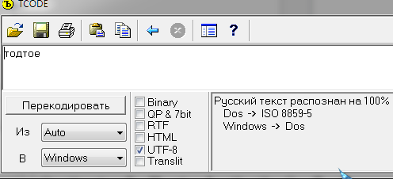
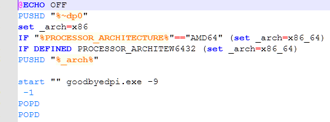

Вставил я значит то что советовали туда пару минут назад и после переустановки проги конкретно этот cmd стал выдавать такую ошибку. Ютуб кстати в любом случае крякнул и я не понял что же вписать надо 
Вот что написано в блокноте:
@ECHO OFF
PUSHD “%~dp0”
set _arch=x86
IF “%PROCESSOR_ARCHITECTURE%”==“AMD64” (set _arch=x86_64)
IF DEFINED PROCESSOR_ARCHITEW6432 (set _arch=x86_64)
PUSHD “%_arch%”
start “” goodbyedpi.exe -5 -e1 -q --fake-gen 12 --fake-from-hex 160301FFFF01FFFFFF0303594F5552204144564552544953454D454E542048455245202D202431302F6D6F000000000009000000050003000000 --blacklist …\russia-blacklist.txt --blacklist …\russia-youtube.txt
POPD
POPD
Вам редактор переломал CMD. Скачайте нормальный, например AkelPad и через него правьте
А что это и как исправить? Извиняюсь я не программист от слова совсем(
это вряд ли, как можно сломать Latin1 ?
а вот вангую я что папка с этими скриптами у него называется по-русски, вот pushd и помирает
особеннно если у него что-то включено вроде новомодного UTF-8 насильно неюникодным программам
не, папка не на киррилице.
При чем здесь программист? ) Блокнот у вас странный, либо старый, либо я не знаю. Он не может правильно сохранить CMD который вы меняете. Скачайте AkelPad - это типа Блокнота, но круче и через него правьте и сохраняйте нужный вам CMD
И да, оригинальный CMD перед этим из архива программы восстановите
До правки то этого не было 
Блокнот 11 винды, может в этом проблема, короче сейчас скачаю AkelPad, проверю
Мне кажется дело в кавычках. Смотрите на них внимательно, они не такие как должны быть.
У вас:
start “”
Должно быть:
start ""
Попробуйте их все заменить.
ну тогда sysinternals Process Monitor и смотреть кто именно и что именно пытается найти
правда придется всё-таки прокачаться до “уверенного пользователя ПК” 
в NT вроде блокнот умет с кодировками, так-то редакторов дофига, notepad2, notepad++, unired, bowpad - но…
Что можно сломать в 7-битном ASCII ?
…эх, вроде же была версия Boiko’s TCode, которую учили нормально работать с UTF-8 ?

типа, “отредактировано вордом” ?
ну я попробовал скопировать из форума в блокнот, все равно не получается
D:\Downloads\ValdikSS\goodbyedpi-0.2.3rc3-2>1_russia_blacklist.cmd
Синтаксическая ошибка в имени файла, имени папки или метке тома.
Отказано в доступе.
Думаю эти кавычки - самодеятельность форума.
в общем, топикстартеру -
- научиться на форуме пользоваться кнопкой “текст как есть без форматирования”, она же Разметка markdown backtick
- распаковать архив заново в чистую папку и аккуратно с начала сделать всё
После скачивания и исправления с помощью AkelPad вылезает ошибка 433 и ничего теперь вообще не запускается( Причем при его изменение он что-то потерял во второй строчке…
Я сейчас взял его код, заменил все кавычки, заменил объединенное троеточие и у меня запустилось без проблем.
Я так подозреваю, автор откуда-то скопипастил код и в нем кривое форматирование.
Вы исходный файл из архива программы достали, как я сказал?
Скорее всего из Issues гитхаба
я вопроизвёл проблему скопировав текст из поста и вставив в блокнот.
это 100% кавычки, которые после start идут. тАЬтАЭ конвертируется в “” через UTF-8:CP866. как это у автора получилось - интересный вопрос.
решение проблемы - распаковать gdpi из архива заново с заменой всех файлов и в будущем редактировать файлы НЕ копипастой.
Извиняюсь за оффтоп, но почему akelpad, а не notepad++? Он удобнее?
А если по теме, то на 10-ке мне встроенный блокнот поломал как-то .cmd - добавил какой-то юникодный символ в начало строки
Удалил и из архива достал исходные файлы. Пару раз была ошибка 433 но после переустановки и изменения конкретных параметров без этих скобок ещё раз вроде всё заработало, спасибо! 
единственное ютуб теперь у себя во вкладке пишет (2). Что это значит? Интересно прост (значения -5 --fake-gen 12 --fake-from-hex)
Я знаю как минимум одну версию Блокнота, которая при открытии родных .cmd, поставляемых с GDPI, некорректно обрабатывает переносы строк. Вместо ожидаемой новой строки - там якобы “ничего” (нет даже пробела), но если походить туда-сюда курсором, то видно, что там как бы “некий” символ нулевой толщины вместо нормального “энтера”. Если сохранить этот текстовый файл этим же Блокнотом, то эти переносы строк сломаются уже по-настоящему в файле, и он не будет обрабатываться корректно командной строкой.
Это не проблема “неправильной” кодировки именно .cmd от Валдика (хотя, возможно, при большом желании их можно переделать так, чтобы они правильно открывались “любыми блокнотами”). Этой проблеме в тонкостях кодировок много лет. Например, открыв какой-то плейнтекстовый файл в браузере и скопировав из окна браузера текст в блокнот, можно получить не идентичный файл - где-то потеряется “лишняя” пустая строка в конце, где-то сломаются переносы, как в этом примере, и т.д.
Мне удобнее. Плюсом тоже пользовался - не зашел. В акеле мне нравится, что там по ПКМ в статусной строке можно выбирать, в какой кодировке открыть файл. Так же показывает, на никсах был файл создан или винде
@bxynue Ага, я такие переломанные CMD даже где-то на скринах тут видел
это потому, что там юниксовые переносы строк - только lf, а не crlf. блокнот в win7 этого не любит. в win 8 и выше этой проблемы нет
Держите живой скрин из-под 8. 
{kind=link}
Я даже не уверен, менялся ли этот Блокнот со времен XP.
ну хорошо, я наврал, win8 не проверял лично  в win10 точно отображается нормально, так что блокнот точно менялся
в win10 точно отображается нормально, так что блокнот точно менялся
Спасибо, надо попробовать akelpad. В nodepad++ мне нравится, что он сохраняет от админа hosts, без лишних телодвижений
Именно на 10-ке он мне и поломал как-то. Но возможно в батнике была ansi кодировка, а он в юникод видимо сохранил
если чего-то лёгкого хочется, то проще notepad2e из состава TortoiseGit/TortoiseSVN
ну или просто найдите, сам notepad2 давно умер, но кто-то из наших сделал форк
Замучался убивать NotepadStarter (у меня n++ всегда все вместо блокнота открывал  ), но убил.
), но убил.
Вот редактирование на win7 - да, UNIX EOL его с толку сбивает (см. “-1” добавленное в конец командной строки), но прям вот ломать он ничего не ломает, и даже строчки не склеивает. В общем, повторить такое этакое так и не получилось 

akel - древность. попробуйте там хотя бы настроить подсветку синтаксиса нормально, например, полужирные определённые ключевые слова. и остальное всё корявое через плагины.
якобы нормальный np++ “не зашёл”. нет. а окончания строк - не только показывает, но и преобразовывает.
Последние писки моды, уж если на то пошло - Sublime Text и 010 Editor.
форум ломает дофига чего.
– вместо --
“” вместо ""
в редакторе есть “текст как есть” ctrl-e